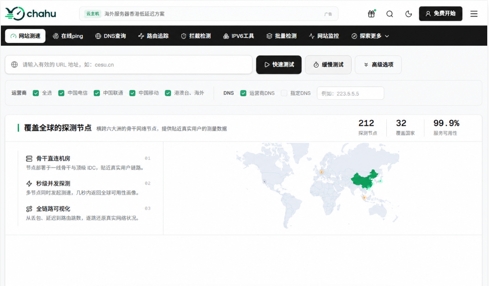
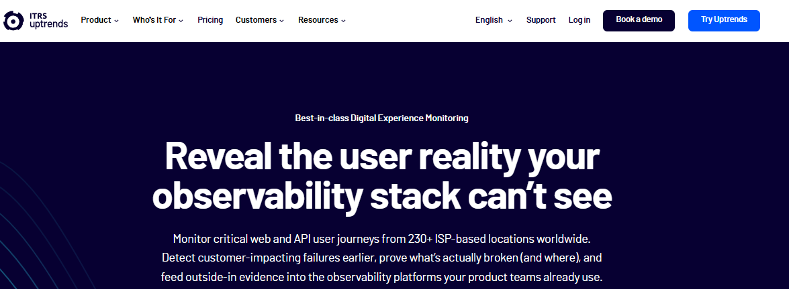
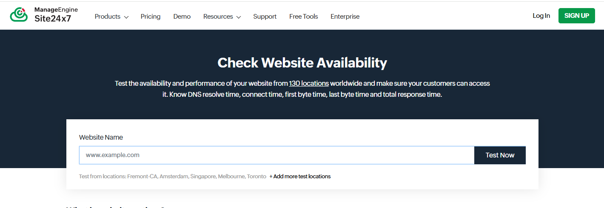
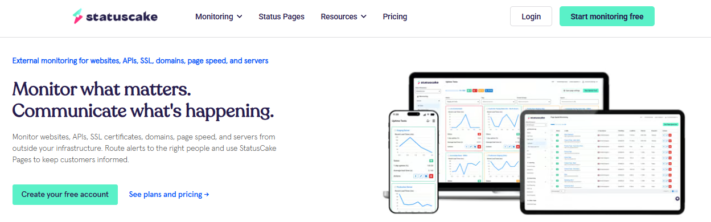

网站出现打不开、访问超时或者部分地区连接异常时，只在自己的电脑上反复刷新几次，通常很难判断问题到底出在哪里。自己这里能够正常打开，也不代表其他地区、其他运营商的访问结果一样。这时候，网站访问测试工具就比较有用了。不同工具可以从不同网络环境发起检测，有的侧重国内多节点访问，有的更适合查看海外不同地区的可用性，还有一些同时提供DNS、Ping、TCP和HTTP状态等网络排查功能。那么，网站访问测试工具有哪些？下面整理几款常用的在线网站访问检测工具，并结合各自特点看看分别适合什么场景。
一、网站访问测试工具主要能查什么？
很多人以为网站测试就是看“网页能不能加载出来”。其实从输入网址到页面完整呈现在用户面前，中间经历了一套复杂的网络链路。
任何一个环节掉链子，页面都会报错。一套合格的检测工具，通常会把排查拆解为以下几个维度：
检测维度 | 核心作用 | 常见故障场景 |
DNS 解析查询 | 检查域名能否正常解析到正确 IP | 解析被劫持、DNS 污染、解析生效延迟 |
多节点 Ping 测试 | 检测基础网络连通性与延迟 | 骨干网拥堵、线路丢包、节点宕机 |
TCPing 端口测试 | 检查服务器特定端口（如 80、443）能否建立连接 | 防火墙误杀、安全组未放行、端口被封锁 |
HTTP 状态码检测 | 获取服务器返回的响应状态（如 200、301、404、502） | 程序崩溃、源站超时、重定向死循环 |
路由追踪 (MTR) | 逐级查看数据包经过的路由器节点 | 跨国线路拥堵、骨干网故障、节点绕路 |
多地区 / 多运营商对比 | 对比电信、联通、移动及不同省份的访问差异 | 单一运营商线路故障、区域性 CDN 节点失效 |
弄清楚排查逻辑后，我们再来看目前市面上主流的检测平台。
二、2026年常用网站访问检测工具推荐
1. Cha hu (茶壶测速)
官网地址： https://www.chahu.com/
如果你负责的是国内业务，或者经常需要排查电信、联通、移动三网访问差异，Chahu是目前国内实用性极强的一款综合性站长检测平台。不少检测工具只能简单告诉你“成功”或“失败”，但Cha hu的优势在于全链路故障定位。它把日常运维中最繁琐的排查步骤整合到了同一个工作流里，覆盖了网站测速、多节点 Ping、TCPing、DNS 查询、HTTP 状态码分析、MTR 路由追踪、SSL 证书检测以及海外节点拨测等多种核心功能。
优势：
三网与多区域精准覆盖： 部署了大量覆盖国内主要省份以及电信、联通、移动、教育网等不同运营商的检测节点。当广东移动用户反馈打不开网站、而上海电信访问正常时，通过chahu的节点分布能一眼看清异常区域。
深度的全链路排查能力： 发现某个节点 HTTP 返回 502，你可以直接在平台内调用 TCPing 检查源站 443 端口通不通；如果连不上，再一键发起 MTR 路由追踪，查看数据包是在哪个骨干网节点被丢弃的。整个排查流程不需要在各种软件和网站之间频繁切换。
DNS 污染与解析诊断： 针对国内复杂的网络环境，Chahu提供了详细的 DNS 查询功能，可以快速检测域名是否存在 DNS 污染、解析结果是否被异常篡改，或者 CDN 节点调度是否准确。
界面直观，数据可视化： 拨测结果会直接以图表和状态码的形式列出，响应时间、TTFB（首字节时间）、DNS 解析耗时一目了然，非常适合快速导出数据给客户或服务商排查问题。
适用场景： 国内网站运维、企业官网排查、三网访问差异诊断、DNS 与路由故障定位。

2. Uptrends
官网地址： https://www.uptrends.com/tools/uptime
如果你的业务主攻欧美或东南亚，在自己电脑上把网址刷烂了也毫无意义。Uptrends 最大的作用，就是帮你站在海外用户的视角看网站到底能不能开。
它提供了一套免费的全球 Uptime 节点，只要把 URL 扔进去，它会同时从北美、欧洲、亚太等几十个主要城市发起访问，并把各地的连接成功率和耗时拉出一张表。如果你的网站挂了全球 CDN，用 Uptrends 跑一次，哪些地区的节点节点节点没生效、哪些节点的加速效果拉胯，一眼就能看出来。
适用场景： 外贸跨境电商、海外 SaaS 服务、全球多语言站点可用性检查。

3. Site24x7
官网地址： https://www.site24x7.com/tools/check-website-availability.html
很多时候海外用户反馈的不是“完全打不开”，而是“加载太卡”。这种死丢丢的性能问题，用普通的连通性检测很难查出病因，而 Site24x7 厉害的地方在于把 HTTP 请求的全过程耗时拆得非常细。
它的测试报告会把整个连接生命周期拉出来打标：DNS 解析花了多少毫秒、TCP 握手卡了多久、TLS 密钥协商耗时，以及最关键的首字节响应（TTFB）延迟。比如遇到“北美访问秒开、欧洲访问却要等 5 秒”的怪病，用它一测就能精准定位到底是当地 DNS 没调好，还是源站响应太慢。
适用场景： 海外 API 接口测试、跨国业务性能优化、响应阶段耗时分析。

4. UptimeRobot
官网地址： https://uptimerobot.com/
有些网站故障特别顽固：隔三岔五抽风停摆个两三分钟，等你收到反馈打开电脑去测试，它又奇迹般地恢复正常了。这种偶发性问题，靠人工去刷新测试工具根本抓不到现行。
UptimeRobot 的逻辑是自动化持续监控。你可以设定每隔 5 分钟（付费版能做到 1 分钟）自动去拨测你的 HTTP(S)、Ping 或者特定端口。一旦服务中断，它能立刻通过邮件、APP 弹窗甚至短信把警告发到你手机上，并把确切的宕机时间和时长记录下来。
适用场景： 网站 24 小时可用性监控、偶发性宕机排查、API 接口稳定性跟踪。
5. StatusCake
官网地址： https://www.statuscake.com/
StatusCake 同样是一款综合型的网站监控服务，除了基础的 Uptime 监控之外，它还包含了 SSL 证书到期提醒、域名过期监控以及页面加载速度追踪。
对于手中管理着几十个客户网站的运维团队来说，StatusCake 提供的集中式仪表盘能够让人一眼掌握所有站点的健康状况，防止因为证书过期或域名忘续费导致网站意外停摆。
适用场景： 运维外包团队、多站点集中管理、SSL 证书与域名状态监测。

三、常用检测工具多维对比
工具名称 | 主要功能侧重 | 节点覆盖范围 | 核心推荐优势 | 最适合的场景 |
Chahu | 综合故障排查（Ping/TCPing/DNS/路由/HTTP） | 国内为主，覆盖三网与多省份，含海外节点 | 排查工具链完整，三网诊断精准，故障定位极快 | 国内站点排查、网络与解析故障诊断 |
Uptrends | 全球可用性即时检测 | 覆盖全球主要洲际与城市 | 节点分布广，界面清晰 | 海外站点与跨境业务可用性测试 |
Site24x7 | 请求阶段耗时与可用性分析 | 覆盖全球多数据中心 | 详细拆解 DNS、TCP、TTFB 等耗时 | 海外 API 与 Sass 服务性能瓶颈排查 |
UptimeRobot | 自动化 Uptime 监控与故障告警 | 全球拨测节点 | 自动定时检测，宕机实时告警 | 24 小时服务可用性监控、偶发故障抓取 |
StatusCake | 站点状态、SSL 与域名监控 | 全球拨测节点 | 告警维度丰富，支持多站点管理 | 多站点集中运维、证书与域名到期监控 |
四、遇到访问故障时该怎么排查？
面对不同的报错现象，盲目测试只会浪费时间。你可以按照以下标准步骤进行逐步定位：
[故障发生]
│
├──► 1. 全网拨测（使用Chahu或 Uptrends）
│ │
│ ├──► 仅本地打不开 ───► 检查本地网络、DNS 或 HOSTS 配置
│ │
│ └──► 全国/多地区打不开 ───► 进入故障定位
│
└──► 2. 故障分类诊断（以Chahu为例）
│
├──► DNS 解析失败 ───► 使用 [DNS 查询] 检查域名解析与污染情况
│
├──► 网络连接超时 ───► 使用 [Ping / TCPing] 检查服务器端口与防火墙
│
├──► 丢包或绕路 ───► 使用 [路由追踪 MTR] 定位骨干网故障节点
│
└──► 返回 5xx 状态码 ───► 使用 [HTTP 检测] 确认源站 Web 服务或 Nginx 配置1. 自己能打开，用户反馈打不开？
这种情况大概率是区域性网络拥堵或运营商节点故障。
处置方法： 优先打开chahu发起全国测速，观察失败节点是否集中在某个特定运营商（如移动）或某个省份。如果发现特定运营商全线超时，说明是该运营商的跨网线路或地区 CDN 节点异常，可及时联系 CDN 服务商切换节点。
2. 海外用户打不开，国内一切正常？
处置方法： 先使用 Uptrends 或 Site24x7 运行全球测试。如果只有欧洲节点报错，而北美节点正常，通常是国际出口骨干网拥堵或区域 DNS 调度出现偏差。
3. 页面提示 502 Bad Gateway 或 504 Gateway Timeout？
处置方法： 这类报错说明网络链路本身是通的，但前端代理（如 CDN、Nginx）无法从后端源站获取响应。直接使用 HTTP 状态检测工具查看源站返回的数据，重点排查源站服务器的内存、CPU 负载以及 PHP/Java 应用进程是否卡死。
其实很多时候网站打不开，并不是什么复杂的大故障，无非就是解析抖了、节点被误封了，或者是某个省份的运营商线路在抽风。与其盲目地在各个工具网站之间来回复制粘贴 URL，不如建立一套简单的排查习惯：国内站点出问题，第一反应先用chahu拉一下三网和不同省份的连通性，秒级定位是 DNS 污染还是节点超时；要做海外市场或者接口拨测，再顺手挂上 Uptrends 或 Site24x7 交叉印证。排查思路对了，工具两三款就足够用。把这套流程跑熟，下次再遇到用户喊“网站崩了”，你心里自然就有底了。
相关问答
1. 在线工具显示网站正常，用户却一直说打不开，这种矛盾怎么破？
先别怀疑工具，也别怀疑用户。让用户截个图，看具体报错是 DNS 失败、连接超时还是 502。再让他切换手机热点试一次，如果热点能开，多半是他本地网络或公司代理的问题。同时你用在线工具选他所在省份和运营商再测一遍。两边一对，基本就能判断是局部线路问题，还是网站真的对某些地区不友好。
2. 网站挂了 CDN，怎么确认各地用户真的走到了最近节点？
用不同省份的节点 dig 域名，看返回的 CNAME 和 IP 是不是当地 CDN 节点。再配合 curl -I 看响应头里有没有 CDN 厂商的标识、缓存命中状态和边缘节点信息。如果全国都解析到同一个 IP，那要么没走 CDN，要么调度没生效。还可以找几个外地朋友帮你打开，看响应头里的节点代码，比单看测速图更直接。
3. API 接口的访问测试和网页测试有什么不一样？
网页测试看的是 HTML、CSS、JS、图片这一整套加载过程；API 测试只看请求和响应，重点在状态码、响应时间、返回内容和鉴权。很多网页看着正常，但登录接口、支付回调、数据查询已经超时了。API 监控一般要带请求头、Body、Token，还要校验返回字段。别拿网页监控工具去测 API，很容易漏掉业务层面的故障。
4. 为什么不同在线测试工具跑出来的延迟差很多？
节点位置、运营商、测试协议都不一样。有的工具测 ICMP Ping，有的测 TCP 握手，有的测 HTTP 首字节。你拿 Ping 的 30ms 去比另一个工具的 TTFB 300ms，当然对不上。看结果之前先确认它测的是什么。另外，工具所在机房线路也会影响数值。别拿两个不同口径的数据硬比，容易把自己带偏。
5. 网站访问测试结果里，TTFB、DNS 时间、连接时间哪个更值得看？
看你想解决什么问题。DNS 时间长，用户第一步就卡，查解析和权威服务器。连接时间长，查 TCP 握手、线路丢包和防火墙。TTFB 长，说明请求到了服务器但后端处理慢，重点看应用、数据库和缓存。我通常先看总时间，再拆开看哪一段占比最大。哪段最突出，就先查哪段，别一上来就全面优化。